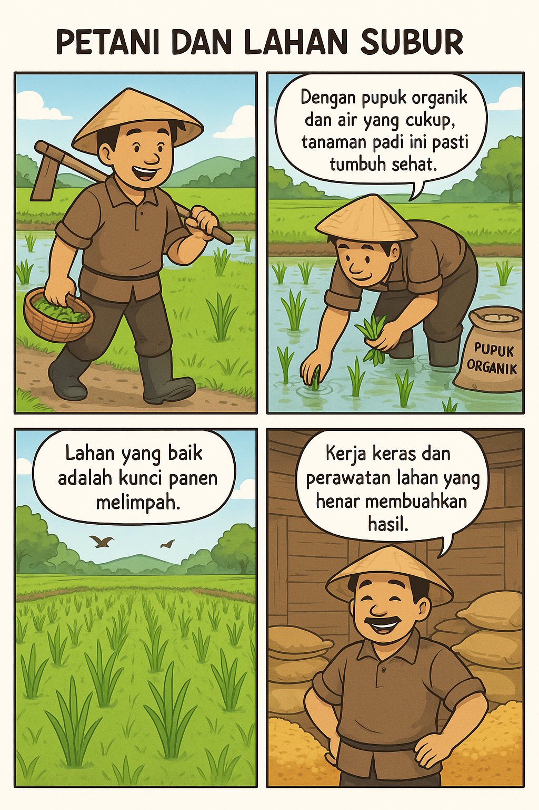

🌾 Praktik Penggunaan Lahan Pertanian yang Baik
Diposting pada 15 Mei 2025
Rotasi Tanaman dan Tumpangsari
Menanam berbagai jenis tanaman secara bergantian atau bersamaan di lahan yang sama dapat mencegah kelelahan tanah, mengurangi risiko serangan hama, dan meningkatkan hasil panen.
Kuripankidul
Agroforestri
Menggabungkan tanaman pertanian dengan pohon-pohon keras untuk meningkatkan keanekaragaman hayati, mencegah erosi, dan memperbaiki struktur tanah.
Kuripankidul
Penggunaan Pupuk Organik
Menggunakan pupuk organik seperti kompos atau pupuk hijau dapat meningkatkan kesuburan tanah dan mengurangi ketergantungan pada bahan kimia.
Kuripankidul
Sistem Irigasi Efisien
Menerapkan sistem irigasi yang hemat air, seperti irigasi tetes atau sprinkler, untuk memastikan ketersediaan air yang optimal bagi tanaman sepanjang tahun.
Cikoneng Ciamis
Pengelolaan Lahan Bera
Memanfaatkan lahan yang tidak digunakan sementara (lahan bera) untuk menanam tanaman penutup atau legum guna menjaga kesuburan tanah dan mencegah erosi.
Kuripankidul
Pertanian Terpadu
Mengintegrasikan berbagai kegiatan pertanian, seperti tanaman, ternak, dan perikanan, dalam satu sistem untuk memaksimalkan efisiensi dan keberlanjutan.
🛠️ Rekomendasi Produk untuk Mendukung Praktik Pertanian
Pupuk Organik Cair KILAT 500 ML: Pupuk organik cair yang dapat meningkatkan kesuburan tanah dan pertumbuhan tanaman.
Alat Penarik Pamandu Selang Air Pertanian: Alat yang memudahkan dalam sistem irigasi, memastikan distribusi air yang merata ke seluruh lahan.
Tanah Subur untuk Segala Jenis Tanaman 20 kg: Media tanam yang kaya nutrisi, cocok untuk berbagai jenis tanaman.